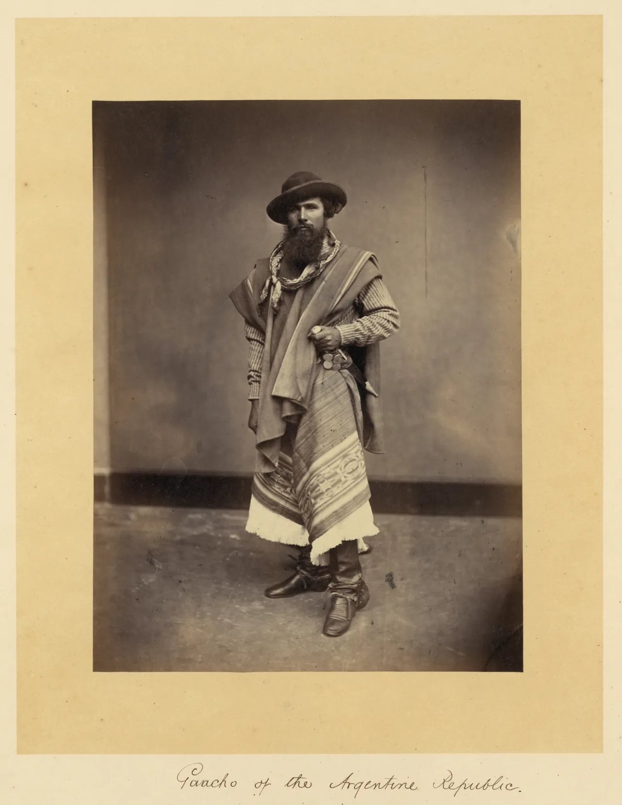
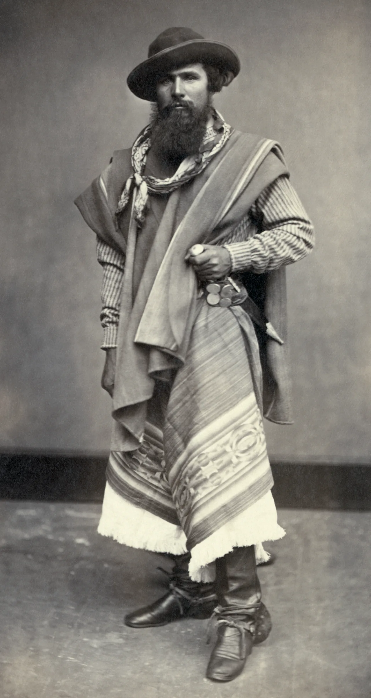

En la inmensidad desolada de las llanuras pampeanas, donde la distancia entre dos ranchos se medía en leguas a caballo, el gaucho forjó un cuchillo que era al mismo tiempo cubierto de mesa, hacha de desmonte y defensa del honor. Una indagación sobre el facón, la herrería criolla y la filosofía de la soledad en el Río de la Plata.
Quien haya contemplado la pampa húmeda en las horas del crepúsculo, cuando el disco encendido del sol se hunde en la línea recta de un horizonte sin árboles ni montañas, habrá sentido ese estremecimiento particular que la literatura rioplatense ha llamado el vértigo de la llanura. En esa inmensidad desolada donde la mirada humana no encuentra dónde hacer pie y el viento frío del sur barre las leguas con un gemido interminable, el hombre del siglo diecinueve vivía en una intemperie absoluta. No había Estado, no había jueces ni cuarteles a la redonda, no había cercados ni caminos trazados: solo la tierra abierta, el ganado cimarrón disperso entre los pajonales y un jinete solitario que dependía exclusivamente de su caballo y de la hoja afilada que llevaba cruzada sobre la cintura.

Ese hombre era el gaucho, y esa hoja era el facón, un cuchillo largo de hoja recta y punta aguda que ha sido injustamente estereotipado por el folclor cinematográfico como una simple daga para duelos sangrientos de pulpería. Pero en la vida concreta de las pampas, el cuchillo criollo era un artefacto infinitamente más noble y versátil: era, antes que nada, la herramienta universal que permitía al paisano mantenerse con vida. Con el facón degollaba una res al mediodía para comer un pedazo de carne asada clavada en una estaca de sauce; con su lomo desollaba el cuero con suavidad para no tajear la piel; con su filo recortaba los tientos de lonja cruda para trenzar un lazo, remendaba una cincha rota o cortaba las ramas secas para encender el fuego que templaría la noche.
La genealogía material de estas hojas encierra una apasionante historia de reutilización y herrería de frontera. En los siglos dieciocho y diecinueve, la España colonial mantenía un monopolio riguroso sobre el comercio de aceros finos, y las hojas traídas de Toledo o de Solingen costaban sumas astronómicas que ningún peón de campo podía soñar con pagar. Fue entonces cuando los herreros rurales de Buenos Aires, Santa Fe, Entre Ríos y la Banda Oriental descubrieron que en las carretas de bueyes que atravesaban el territorio descansaba un yacimiento de acero inmejorable: los elásticos de amortiguación de las ruedas, templados para soportar toneladas de peso y años de traqueteo sobre huellas de piedra.
En sus fraguas de carbón de leña, avivadas con fuelles de cuero de toro, el herrero tomaba un trozo de ese elástico partido, lo calentaba al rojo cereza y lo golpeaba a mano sobre el yunque con un martillo pesado de peña, estirando la masa de metal hasta forjar una hoja ancha, elástica y resistente. Aquel acero al carbono poseía una cualidad que los cuchillos modernos de acero inoxidable jamás podrán igualar: era un metal vivo, que se dejaba afilar con facilidad sobre cualquier piedra de río o contra la suela de la bota de potro, y que retenía un filo tan temible que los paisanos decían que bastaba con mirarlo de reojo para sangrar.
Pero si la hoja era la fuerza y la eficacia del instrumento, el cabo y la vaina constituían el orgullo del artesano platero. En los días de descanso, los maestros plateros de San Antonio de Areco o de Tandil moldeaban empuñaduras de plata cincelada o de alpaca gruesa, decoradas con motivos vegetales de acanto, iniciales del dueño o cabezas de caballo en relieve. Para la vaina se utilizaba cuero de vaca sobado a mano con grasa de riñón, o bien plata maciza con una traba de gancho —la oreja o presilla— que permitía calzar el arma en la faja de lana tejida, justo detrás de la espalda, con el filo hacia abajo y la empuñadura inclinada hacia la derecha para que la mano pudiera empuñarlo en una fracción de segundo ante cualquier sobresalto.

El código del uso del cuchillo en la llanura estaba regido por una ética severa y caballeresca que José Hernández retrató con maestría en el Martín Fierro. El gaucho no desenvainaba por liviandad ni para cometer bajezas a traición: desenfundar era un acto solemne. Cuando dos hombres se enfrentaban en un duelo de orilla, se envolvían el brazo izquierdo en el poncho de lana dura para usarlo como escudo protector y esgrimían el facón con la muñeca suelta, buscando marcar el rostro del adversario con un tajo superficial —la viaraza o el planazo— para humillar su soberbia sin llegar a causarle la muerte. Matar a un hombre era una desgracia que condenaba al vencedor a huir a los montes y vivir como un matrero perseguido por la milicia.
A la hora de comer el asado, el uso del cuchillo adoptaba la precisión de un rito sagrado. El gaucho tomaba con los dientes un bocado grande de carne caliente directamente del asador, sostenía el trozo con la mano izquierda y, en un movimiento vertiginoso que ponía los pelos de punta a los viajeros europeos, arrimaba el filo del facón a escasos milímetros de sus propios labios para cortar la tajada de un tajo ascendente. No había tenedores ni platos de loza: el cuchillo era el puente directo entre la boca del hombre y la comida que la tierra le entregaba.
Hoy en día, las llanuras pampeanas han sido cercadas por miles de kilómetros de alambrados de púas, el ganado se alimenta en corrales de engorde intensivo controlados por computadoras y los peones recorren los campos en camionetas con aire acondicionado. Pero en los talleres de cuchillería artesanal que resisten en los pueblos del interior, el fuego de la fragua sigue iluminando la mirada del herrero. El artesano sigue golpeando el acero sobre el yunque, templando la hoja en aceite mineral y puliendo el cabo de asta de ciervo o madera dura. Sabe que ese cuchillo no es un fósil para exhibir en un museo de antigüedades: es el símbolo tangible de una dignidad campesina que aprendió a desafiar la intemperie del mundo valiéndose únicamente de su brazo y de la lealtad incorruptible de su acero.
Fuentes.
- Hernández, José (1872). El Gaucho Martín Fierro: Usos, costumbres y armas del paisano. Imprenta de La Pampa.
- Bayer, Osvaldo (1993). Rebelde amanecer: Vidas de gauchos y peones en la frontera sur. Legasa.
- Ambrosetti, Juan Bautista (1907). El bronce y el acero en las costumbres del gaucho rioplatense. Coni Hermanos.
Investigación histórica y etnográfica sobre la cuchillería criolla tradicional rioplatense.
Fuentes consultadas el 19.11.2026. Análisis e interpretación: RUMMOR. Edición privada para revisión.